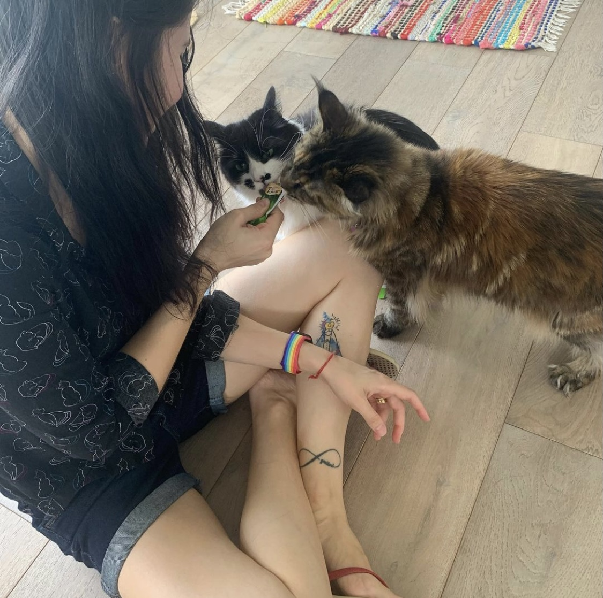

About me

I'm Vanessa Denardin. Born and raised in Brazil, I moved to Australia in 2015, living in Sydney until 2017. In 2018 I moved to Melbourne to study for a Master's degree.
I am excited to have an opportunity in the local Australian market and expand my knowledge.
Get in touch!Skills
- Strong interest in learning and developing new abilities
- Analytical skills
- Strong research skils
- Computing knowledge
- Open to trying new things
Hobbies & Interests
- Travelling
- Reading
- Gardening
- Puzzles
- Cat Lover
Education
- Master of Tourism, Monash University (Melbourne, AU)
- Post-Graduate Studies in Public Management, UFSM (Santa Maria, BR)
- Post-Graduate Studies in Communication and Media Projects, Unifra (Santa Maria, BR
- Bachelor of Tourism, Unifra (Santa Maria, BR)